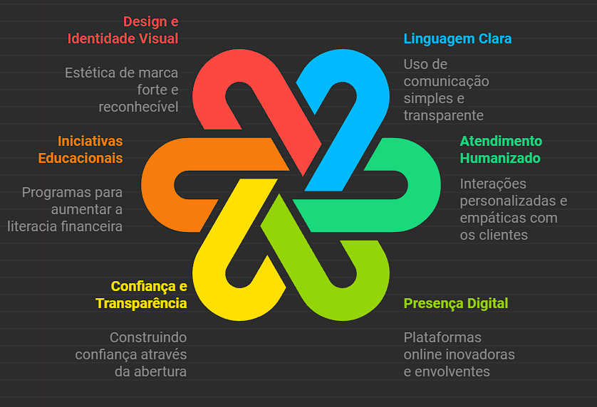

Fundado em 2013 por David Vélez, Cristina Junqueira e Edward Wible, o Nubank nasceu com o propósito de descomplicar os serviços financeiros no Brasil. Desde então, a empresa cresceu e se tornou uma das maiores fintechs do mundo.
Cartão de Crédito sem Anuidade
Conta Digital Gratuita
Empréstimos Pessoais
Investimentos Acessíveis
Seguros
O Nubank anunciou recentemente que atingiu 70 milhões de clientes em toda a América Latina, consolidando sua posição como líder no setor de fintechs. Este marco reflete a confiança dos clientes na abordagem inovadora e transparente da empresa.
O Nubank é conhecido por sua comunicação transparente, atendimento humanizado e forte presença digital. A marca utiliza redes sociais para interagir com os clientes e promover conteúdos educativos sobre finanças.
Veja abaixo o infográfico sobre as características da comunicação do Nubank:
